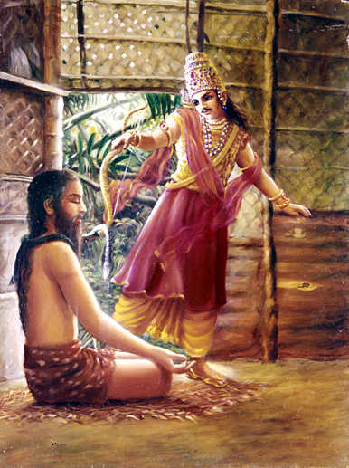

Chapter 4: Mahārāja Parīkṣit Cursed by a Brāhmaṇa Boy
1.18.1 — Śrī Sūta Gosvāmī said: Due to the mercy of the Personality of Godhead, Śrī Kṛṣṇa, who acts wonderfully, Mahārāja Parīkṣit, though struck by the weapon of the son of Droṇa in his mother’s womb, could not be burned.
1.18.2 — Furthermore, Mahārāja Parīkṣit was always consciously surrendered to the Personality of Godhead, and therefore he was neither afraid nor overwhelmed by fear due to a snake-bird which was to bite him because of the fury of a brāhmaṇa boy.
1.18.3 — Furthermore, after leaving all his associates, the King surrendered himself as a disciple to the son of Vyāsa [Śukadeva Gosvāmī], and thus he was able to understand the actual position of the Personality of Godhead, and at last gave up his material body on the bank of the Ganges.
1.18.4 — This was so because those who have dedicated their lives to the transcendental topics of the Personality of Godhead, of whom the Vedic hymns sing, and who are constantly engaged in remembering the lotus feet of the Lord, do not run the risk of having misconceptions even at the last moment of their lives.
1.18.5 — As long as the great, powerful son of Abhimanyu remains the Emperor of the world, there is no chance that the personality of Kali will flourish.
1.18.6 — The very day and moment the Personality of Godhead, Lord Śrī Kṛṣṇa, left this earth, the personality of Kali, who promotes all kinds of irreligious activities, came into this world.
1.18.7 — Mahārāja Parīkṣit was a realist, like the bees who only accept the essence [of a flower]. He knew perfectly well that in this Age of Kali, auspicious things produce good effects immediately, whereas inauspicious acts must be actually performed [to render effects]. So he was never envious of the personality of Kali.
1.18.8 — Mahārāja Parīkṣit considered that less intelligent men might find the personality of Kali to be very powerful, but that those who are self-controlled would have nothing to fear. The King was powerful like a tiger and took care for the foolish, careless persons.
1.18.9 — O sages, as you did ask me, now I have described almost everything regarding the narrations about Lord Kṛṣṇa in connection with the history of the pious Mahārāja Parīkṣit.
1.18.10 — Those who are desirous of achieving complete perfection in life must submissively hear all topics that are connected with the transcendental activities and qualities of the Personality of Godhead, who acts wonderfully.
1.18.11 — The good sages said: O grave Sūta Gosvāmī! May you live many years and have eternal fame, for you are speaking very nicely about the activities of Lord Kṛṣṇa, the Personality of Godhead. This is just like nectar for mortal beings like us.
1.18.12 — We have just begun the performance of this fruitive activity, a sacrificial fire, without certainty of its result due to the many imperfections in our action. Our bodies have become black from the smoke, but we are factually pleased by the nectar of the lotus feet of the Personality of Godhead, Govinda, which you are distributing.
1.18.13 — The value of a moment’s association with the devotee of the Lord cannot even be compared to the attainment of heavenly planets or liberation from matter, and what to speak of worldly benedictions in the form of material prosperity, which are for those who are meant for death.
1.18.14 — The Personality of Godhead, Lord Kṛṣṇa [Govinda], is the exclusive shelter for all great living beings, and His transcendental attributes cannot even be measured by such masters of mystic powers as Lord Śiva and Lord Brahmā. Can anyone who is expert in relishing nectar [rasa] ever be fully satiated by hearing topics about Him?
1.18.15 — O Sūta Gosvāmī, you are a learned and pure devotee of the Lord because the Personality of Godhead is your chief object of service. Therefore please describe to us the pastimes of the Lord, which are above all material conception, for we are anxious to receive such messages.
1.18.16 — O Sūta Gosvāmī, please describe those topics of the Lord by which Mahārāja Parīkṣit, whose intelligence was fixed on liberation, attained the lotus feet of the Lord, who is the shelter of Garuḍa, the king of birds. Those topics were vibrated by the son of Vyāsa [Śrīla Śukadeva].
1.18.17 — Thus please narrate to us the narrations of the Unlimited, for they are purifying and supreme. They were spoken to Mahārāja Parīkṣit, and they are very dear to the pure devotees, being full of bhakti-yoga.
1.18.18 — Śrī Sūta Gosvāmī said: O God, although we are born in a mixed caste, we are still promoted in birthright simply by serving and following the great who are advanced in knowledge. Even by conversing with such great souls, one can without delay cleanse oneself of all disqualifications resulting from lower births.
1.18.19 — And what to speak of those who are under the direction of the great devotees, chanting the holy name of the Unlimited, who has unlimited potency? The Personality of Godhead, unlimited in potency and transcendental by attributes, is called Ananta [Unlimited].
1.18.20 — It is now ascertained that He [the Personality of Godhead] is unlimited and there is none equal to Him. Consequently no one can speak of Him adequately. Great demigods cannot obtain the favor of the goddess of fortune even by prayers, but this very goddess renders service unto the Lord, although He is unwilling to have such service.
1.18.21 — Who can be worthy of the name of the Supreme Lord but the Personality of Godhead, Śrī Kṛṣṇa? Brahmājī collected the water emanating from the nails of His feet in order to award it to Lord Śiva as a worshipful welcome. This very water [the Ganges] is purifying the whole universe, including Lord Śiva.
1.18.22 — Self-controlled persons who are attached to the Supreme Lord Śrī Kṛṣṇa can all of a sudden give up the world of material attachment, including the gross body and subtle mind, and go away to attain the highest perfection of the renounced order of life, by which nonviolence and renunciation are consequential.
1.18.23 — O ṛṣis, who are as powerfully pure as the sun, I shall try to describe to you the transcendental pastimes of Viṣṇu as far as my knowledge is concerned. As the birds fly in the sky as far as their capacity allows, so do the learned devotees describe the Lord as far as their realization allows.
1.18.24-25 — Once upon a time Mahārāja Parīkṣit, while engaged in hunting in the forest with bow and arrows, became extremely fatigued, hungry and thirsty while following the stags. While searching for a reservoir of water, he entered the hermitage of the well-known Śamīka Ṛṣi and saw the sage sitting silently with closed eyes.
1.18.26 — The muni’s sense organs, breath, mind and intelligence were all restrained from material activities, and he was situated in a trance apart from the three [wakefulness, dream and unconsciousness], having achieved a transcendental position qualitatively equal with the Supreme Absolute.

1.18.27 — The sage, in meditation, was covered by the skin of a stag, and long, compressed hair was scattered all over him. The King, whose palate was dry from thirst, asked him for water.
1.18.28 — The King, not received by any formal welcome by means of being offered a seat, place, water and sweet addresses, considered himself neglected, and so thinking he became angry.
1.18.29 — O brāhmaṇas, the circumstances having distressed him with extreme hunger and thirst, the King directed toward the sage his anger and envy, which he had never before directed toward a brāhmaṇa.
1.18.30 — While leaving, the King, being so insulted, picked up a lifeless snake with his bow and angrily placed it on the shoulder of the sage. Then he returned to his palace.
1.18.31 — Upon returning, he began to contemplate and argue within himself whether the sage had actually been in meditation, with senses concentrated and eyes closed, or whether he had just been feigning trance just to avoid receiving a lower kṣatriya.
1.18.32 — The sage had a son who was very powerful, being a brāhmaṇa’s son. While he was playing with inexperienced boys, he heard of his father’s distress, which was occasioned by the King. Then and there the boy spoke as follows.
1.18.33 — [The brāhmaṇa’s son, Śṛṅgi, said:] O just look at the sins of the rulers who, like crows and watchdogs at the door, perpetrate sins against their masters, contrary to the principles governing servants.
1.18.34 — The descendants of the kingly orders are definitely designated as watchdogs, and they must keep themselves at the door. On what grounds can dogs enter the house and claim to dine with the master on the same plate?
1.18.35 — After the departure of Lord Śrī Kṛṣṇa, the Personality of Godhead and supreme ruler of everyone, these upstarts have flourished, our protector being gone. Therefore I myself shall take up this matter and punish them. Just witness my power.
1.18.36 — The son of the ṛṣi, his eyes red-hot with anger, touched the water of the River Kauśika while speaking to his playmates and discharged the following thunderbolt of words.
1.18.37 — The brāhmaṇa’s son cursed the King thus: On the seventh day from today a snake-bird will bite the most wretched one of that dynasty [Mahārāja Parīkṣit] because of his having broken the laws of etiquette by insulting my father.
1.18.38 — Thereafter, when the boy returned to the hermitage, he saw a snake on his father’s shoulder, and out of his grief he cried very loudly.
1.18.39 — O brāhmaṇas, the ṛṣi, who was born in the family of Aṅgirā Muni, hearing his son crying, gradually opened his eyes and saw the dead snake around his neck.
1.18.40 — He threw the dead snake aside and asked his son why he was crying, whether anyone had done him harm. On hearing this, the son explained to him what had happened.
1.18.41 — The father heard from his son that the King had been cursed, although he should never have been condemned, for he was the best amongst all human beings. The ṛṣi did not congratulate his son, but, on the contrary, began to repent, saying: Alas! What a great sinful act was performed by my son. He has awarded heavy punishment for an insignificant offense.
1.18.42 — O my boy, your intelligence is immature, and therefore you have no knowledge that the king, who is the best amongst human beings, is as good as the Personality of Godhead. He is never to be placed on an equal footing with common men. The citizens of the state live in prosperity, being protected by his unsurpassable prowess.
1.18.43 — My dear boy, the Lord, who carries the wheel of a chariot, is represented by the monarchical regime, and when this regime is abolished the whole world becomes filled with thieves, who then at once vanquish the unprotected subjects like scattered lambs.
1.18.44 — Due to the termination of the monarchical regimes and the plundering of the people’s wealth by rogues and thieves, there will be great social disruptions. People will be killed and injured, and animals and women will be stolen. And for all these sins we shall be responsible.
1.18.45 — At that time the people in general will fall systematically from the path of a progressive civilization in respect to the qualitative engagements of the castes and the orders of society and the Vedic injunctions. Thus they will be more attracted to economic development for sense gratification, and as a result there will be an unwanted population on the level of dogs and monkeys.
1.18.46 — The Emperor Parīkṣit is a pious king. He is highly celebrated and is a first-class devotee of the Personality of Godhead. He is a saint amongst royalty, and he has performed many horse sacrifices. When such a king is tired and fatigued, being stricken with hunger and thirst, he does not at all deserve to be cursed.
1.18.47 — Then the ṛṣi prayed to the all-pervading Personality of Godhead to pardon his immature boy, who had no intelligence and who committed the great sin of cursing a person who was completely free from all sins, who was subordinate and who deserved to be protected.
1.18.48 — The devotees of the Lord are so forbearing that even though they are defamed, cheated, cursed, disturbed, neglected or even killed, they are never inclined to avenge themselves.
1.18.49 — The sage thus regretted the sin committed by his own son. He did not take the insult paid by the King very seriously.
1.18.50 — Generally the transcendentalists, even though engaged by others in the dualities of the material world, are not distressed. Nor do they take pleasure [in worldly things], for they are transcendentally engaged.